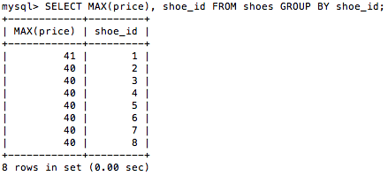

Outer Joins - MySQL Relational Database
Outer Joins
In inner join is when we link two tables together using a column which exists in both tables (usually as a primary key in one and a foreign key in the other). In the next section we are going to talk about using two types of outer joins. The joins refer to the location of the tables. The first join or the left join will place our table to the left side of the combined tables. The second time of join or the right join will place our table to the right of our combined tables. Let's look at a left join first.
Code:
SELECT * FROM customers LEFT JOIN shoes USING (cust_id);;")
Now, let's look at a right join.
Code:
SELECT * FROM customers RIGHT JOIN shoes USING (cust_id);;")
Using Group functions
There are several functions which we can use with multiple values in a column instead of just one. However, when we use group functions we have to use another clause instead of the 'WHERE' clause. This clause is called the 'GROUP BY' clause because instead of identifying a single value we will be using an entire column.
- AVG(): Finds the average from a group of integers.
- COUNT(): Counts the number of values in a column.
- GROUP_CONCAT(): Concats the values of the column.
- MAX(): Finds the largest values of the column.
- MIN(): Finds the smallest values of the column.
- SUM(): Finds the total sum of the values of the column.
SELECT MAX(price), shoe_id FROM shoes GROUP BY shoe_id;
Previous Page Next Page